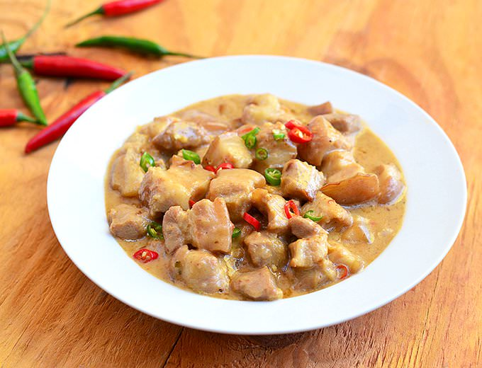

Best Filipino Recipe

Bicol Express
Prep time
10 mins
Cook time
60 mins
Total time
1 hour 10 mins
SERVES: 2
Ingredients
2 pieces pork chops
2 cups coconut cream
2 tablespoons shrimp paste (bagoong alamang)
12 pieces Thai chili or siling labuyo, chopped
2 pieces long green pepper (siling pansigang), chopped
1 medium onion, cubed
1 cup water
4 cloves garlic, crushed and minced
4 tablespoons cooking oil
Salt and ground black pepper to taste
Instructions:
Heat oil in a pan.
Once the oil gets hot, pan fry each pork chop for 1 minute per side. Remove from the pan and then set aside.
Using the remaining oil, sauté garlic and onion until the onion becomes soft.
Pour the coconut cream in the pan. Let boil.
Add the chili and green pepper. Stir.
Gently add the pan-fried pork chop back in the pan. Pour the water and let the liquid boil. Cover and cook in low heat for 40 minutes or until the pork chop becomes tender.
Add the shrimp paste. Stir. Cover and cook until the sauce reduces and becomes thick.
Sprinkle some salt and ground black pepper, if needed.
Transfer to a serving plate. Top with chopped chives or scallions. Serve with rice.
Share and enjoy!